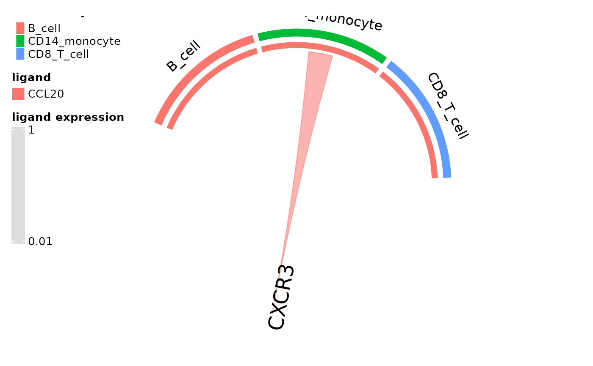
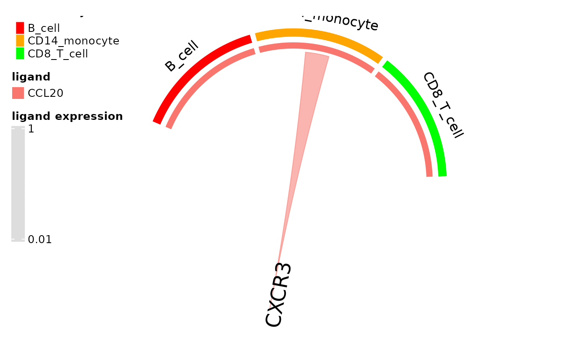

R/plot_fxns.R
circos_ligand_receptor.RdCreates a chord plot of expression of ligands that can activate a specified receptor where chord widths correspond to mean ligand expression by the cluster.
circos_ligand_receptor(
dom,
receptor,
ligand_expression_threshold = 0.01,
cell_idents = NULL,
cell_colors = NULL
)Domino object that has undergone network building with build_domino()
Name of a receptor active in at least one cell type in the domino object
Minimum mean expression value of a ligand by a cell type for a chord to be rendered between the cell type and the receptor
Vector of cell types from cluster assignments in the domino object to be included in the plot.
Named vector of color names or hex codes where names correspond to the plotted cell types and the color values
Renders a circos plot to the active graphics device
example(build_domino, echo = FALSE)
#basic usage
circos_ligand_receptor(pbmc_dom_built_tiny, receptor = "CXCR3")
#> There are more than one numeric columns in the data frame. Take the
#> first two numeric columns and draw the link ends with unequal width.
#>
#> Type `circos.par$message = FALSE` to suppress the message.

#specify colors
cols = c("red", "orange", "green")
names(cols) = dom_clusters(pbmc_dom_built_tiny)
circos_ligand_receptor(pbmc_dom_built_tiny, receptor = "CXCR3", cell_colors = cols)
#> There are more than one numeric columns in the data frame. Take the
#> first two numeric columns and draw the link ends with unequal width.
#>
#> Type `circos.par$message = FALSE` to suppress the message.
